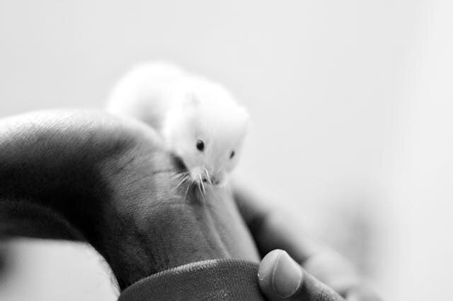
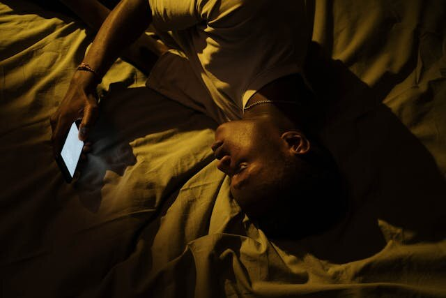

行動心理学
1954年、マギル大学の実験室で偶然が起きた。脳に電極を刺されたネズミが、レバーを押すことをやめなくなった。食べない。眠らない。ただレバーを押し続け、やがて衰弱して死んだ。——快楽のためだ、と人々は思った。70年後、その解釈は間違いだったとわかる。
ジェームズ・オールズとピーター・ミルナーが脳内自己刺激（ICSS）を発見。「脳の快楽中枢」の存在が初めて示唆された年。
同年、米最高裁がブラウン対教育委員会判決で人種分離教育を違憲と宣言。エルヴィス・プレスリーが初のラジオ・デビュー。原子力潜水艦ノーチラス号が進水。
同年の世界：ロジャー・バニスターが1マイル4分の壁を破り、ディエンビエンフーの戦いで第一次インドシナ戦争が終結。ボーイング707の原型機が初飛行した。
真夜中にスマートフォンを開いて、SNSのフィードをスクロールしている。面白い投稿はもう出尽くしたと頭ではわかっている。眠いし、明日は早い。それなのに指が止まらない。「もう1回だけ」が、もう10分も続いている。
この感覚に覚えがあるなら、あなたは知っている——求めているのは「楽しさ」ではない。何かに引っ張られている。楽しいかどうかとは別の力が、行動を駆動している。でも、それが何なのかはうまく言葉にできない。
1954年、脳に電極を埋め込まれたネズミが、その力の正体を示した。そしてその発見は、「快楽」と「欲求」がまったく別のものであることを明らかにする、70年越しの物語の始まりだった。
この記事には2つの体験がある。どちらも、終わった後に見える景色が変わる。
1953年のカナダ、モントリオール。マギル大学の心理学研究室で、ポスドクのジェームズ・オールズは大学院生のピーター・ミルナーに手術の技術を教わりながら、ネズミの脳に電極を埋め込んでいた。狙いは脳幹の網様体網様体（Reticular Formation）脳幹の中央部に位置する神経ネットワーク。覚醒・注意・睡眠の調節に関わる。だった。刺激すれば覚醒が高まり、学習が速くなるはずだ、という仮説を検証するためだった。
ところが1匹のネズミで、奇妙なことが起きた。電極を刺激するたびに、そのネズミは逃げるどころか、刺激を受けた場所に戻ってきた。オールズが刺激する場所を変えると、ネズミはその新しい場所に通い始めた。明らかに、この電気刺激を「求めて」いた。
後のX線検査で原因が判明する。電極は網様体に届いていなかった。狙いがずれて、中隔野中隔野（Septal Area）大脳辺縁系の一部で、視床下部のすぐ上に位置する。情動や報酬に関わる神経回路のハブ。と呼ばれる別の領域に入っていたのだ。偶然の間違いが、脳科学を変える発見になった。
オールズとミルナーは、ネズミをスキナー箱に入れて正式に検証した。レバーを押せば脳に電気刺激が流れる。結果は衝撃的だった。ネズミは1時間に2,000回以上レバーを押し続けた。食べ物の報酬で訓練したときの何倍もの速さだ。しかも満腹にならない。止まらない。
脳の報酬系に電極が埋め込まれている
中隔野や内側前脳束など、ドーパミン経路の上流に配置
レバーを押すと電流が流れる
1回押す＝1回の短い電気パルス。ネズミの自発的行動が起点
ドーパミンが放出される
中脳辺縁系が直接活性化。自然な報酬よりはるかに強い信号
「もっと押したい」という欲求が発生
快楽ではなく欲求が駆動。満腹感がないためループが止まらない
↑ 最初に戻る — このループが1時間に7,000回まで回り続けた
レバー → 脳刺激 → ドーパミン → 「もっと」→ またレバー。満腹がないため止まらない。
ジェームズ・オールズ
James Olds, 1922–1976
アメリカの心理学者・神経科学者。ハーバード大学で社会心理学の博士号を取得後、マギル大学でミルナーと共同研究。脳内自己刺激の発見で報酬系研究の創始者となった。54歳で心臓発作により他界。
"The rat kept returning to that area of the maze where it had been stimulated."
「ネズミは刺激を受けた迷路の場所に何度も帰り続けた。」
— Peter Milner, 回想録（1989年）より
1954年、論文が発表されると、地元紙は「脳の快楽領域が発見された」と報じた。その後の実験で、ネズミの行動はさらに極端な方向へ向かう。
🍖
餌
生存に必要な食料。
目の前に置かれている。
✗ 無視した
vs
⚡
脳刺激レバー
押すと脳に電流が流れる。
栄養はゼロ。
→ こちらを選び続けて衰弱
Routtenberg & Lindy (1965): 視床下部に電極を埋め込まれた6匹が、食事時間中も脳刺激を選び続けた。
箱の反対側にレバーがある
レバーまでの床には電気ショックが流れている
電気ショック床を通過する
食べ物のためには渡らなかった同じ床を、脳刺激のためには渡った
レバーに到達して押し続ける
痛みの記憶よりも「押したい」の欲求が勝った
食べ物のためには耐えない痛みを、脳刺激のためには耐えた
同じ電気ショック床を、食物報酬のためには渡らなかったネズミが、脳刺激のためには渡った。
この発見は「脳の快楽中枢」と解釈された。直感的にはわかりやすい。だが、この解釈は——70年かけて——根本から覆されることになる。
よくある誤解
✗ よくある誤解
ドーパミンは「快楽物質」であり、ドーパミンが出ると気持ちよくなる。
✓ 実際は
ドーパミンは「欲求」を駆動する物質であり、「快楽」そのものとは独立している。ドーパミンを99%失ったネズミでも、砂糖水への快の反応は正常だった。
✗ よくある誤解
ネズミが餓死したのは、レバーを押すのが「気持ちよすぎた」から。
✓ 実際は
最も激しい自己刺激が起きた部位と、快感を直接生む部位は一致していない。「快楽」ではなく「欲求そのもの」に駆り立てられていた可能性が高い。
✗ よくある誤解
依存症の人は「快感」を求めている。快感を別のもので代替すれば治る。
✓ 実際は
依存が進むほど「好き」は減り「欲しい」だけが残る。もう楽しくないと自覚しながらやめられないのは、この乖離による。

実験に使われたのは、こうした白いラットだった。電極は中隔野に埋め込まれた。
ここから先に2つの体験がある。1つ目はじゃんけん、2つ目はレバー。どちらも数分で終わる。終わった後に見えるものが変わる。
相手はランダム。勝つとゲージが溜まる。5回やった時点で「やめる」か「続ける」かを1度だけ聞く。続けた場合、ゲージがMAXになるまで止められない。
ゲージ
0%
Round 1
5回終了。ゲージは溜まりきっていない。ここでやめる？
押すと⚡ 刺激ポイントが加算される。ただし4つの関心が少しずつ下がる。いつやめてもいい。
ボタンを1回押すごとに ⚡+1。4つの関心がそれぞれランダムに 1〜4 ずつ低下する。関心が 0 になっても押し続けられる。好きなだけ押して、好きなときに「結果を見る」へ。
オールズの発見から40年後、ミシガン大学のケント・ベリッジケント・ベリッジ（Kent C. Berridge）ミシガン大学心理学部教授。「欲求（wanting）」と「快楽（liking）」が脳内で分離しうることを示した。が実験を行った。ネズミの脳からドーパミンドーパミン（Dopamine）中脳から前脳に投射される神経伝達物質。快楽ではなく「欲求の突出性」を媒介する。を99%除去した。快楽物質なら、甘いものを味わっても何も感じなくなるはずだ。
結果は予想に反した。ドーパミンを失ったネズミは、砂糖水を口に入れると正常なネズミとまったく同じ快の表情を見せた。「好き」は無傷のまま残っていた。
では何が失われたのか。ドーパミンを失ったネズミは、砂糖水を自分から探しに行かなくなった。目の前に置かれれば味わう。でもレバーを押して手に入れようとはしなかった。放っておけば餓死する。「好き」はあるのに「欲しい」がない。
ベリッジはこれをインセンティブ顕著性と呼んだ。報酬そのものの快感ではなく、報酬に関連する刺激の「目立ち度」を上げる。スマートフォンの通知音が鳴ったとき、その音自体が気持ちいいわけではない。でも確認せずにはいられない——それがインセンティブ顕著性だ。
快楽は脳のヘドニック・ホットスポットと呼ばれるごく小さな領域のオピオイド系が担っている。チョコレートの最初のひと口が最もおいしく3個目から味が薄れるのは、この「好き」システムがすぐに飽和するからだ。
ベリッジとロビンソンのインセンティブ感作理論（1993年）によれば、依存性薬物の反復使用はドーパミン経路を感作させる。「欲しい」が膨らむ一方で「好き」は増えない——むしろ減る。もう楽しくないのにやめられない。それが依存の本質だ。
脳刺激はドーパミン系を自然な報酬よりはるかに強力に活性化した。ネズミが経験していたのは「凄まじい快楽」ではなく「凄まじい欲求」だった可能性が高い。人間に同様の電極を埋め込んだ実験では、患者は「もう一度」と懇願したが「快感」とは描写しなかった。
直接的な流れ 関連する出来事
1954
脳内自己刺激の発見
オールズとミルナー。1時間に2,000回以上のレバー押しが記録された。
1958
ヒース、人間への電極埋め込み
患者はボタンを押し続けたが体験を明確な「快楽」とは言い切れなかった。倫理的に深刻な問題を残した。
1965
「自己飢餓」の報告
ルッテンバーグとリンディ。6匹のネズミが食事を放棄して脳刺激を選び続けた。
1970年代
「ドーパミン＝快楽」説が定着
脳内自己刺激の部位にドーパミン経路が通っていることが判明。覆されるまで20年以上かかる。
1989
「好き」と「欲しい」の分離を発見
ベリッジら。ドーパミンを99%除去したネズミが砂糖水への快反応を保持。
1993
インセンティブ感作理論の提唱
薬物が「欲しい」だけを肥大させ「好き」は変わらないという依存の構造を提唱。
2010年代〜
デジタル依存への応用
SNS・ゲーム・ショート動画が「欲しい」を刺激する設計を持つことが指摘される。
じゃんけんマシン
5回で止められたか？
—
5回目以降の追加ラウンド
The Lever
何回押したか？
—
レバーを押した回数
レバーは別の角度から同じことを見せている。ポイントには何の価値もなかった。バーが減っても実害はなかった。それでも「もう少し」と感じたなら、それはドーパミン系が生み出す欲求だ。快楽ではない。「もっと」という引力だ。
"Rewards are both 'liked' and 'wanted', and those two words seem almost interchangeable. However, the brain circuitry that mediates 'wanting' is dissociable from circuitry that mediates 'liking'."
— Kent C. Berridge & Terry E. Robinson, "Liking, Wanting, and the Incentive-Sensitization Theory of Addiction," American Psychologist (2016)
では、どうすればいいのか。万能の対処法はない。ベリッジ自身が指摘しているように、インセンティブ顕著性は意識的な欲望がなくても暗黙的に作動する。
それでも、環境を変えることには意味がある。手がかり遮断手がかり遮断（Cue Elimination）依存行動のトリガーとなる環境的手がかり（通知音、アプリアイコン、赤いバッジ）を物理的に除去する戦略。——通知をオフにする、グレースケールにする、アイコンを見えにくい場所に移す。またプレコミットメントプレコミットメント（Precommitment）将来の自分の行動を現在のうちに制限する戦略。意志力に頼らず構造で行動を変える。——夜10時以降はスマートフォンを別の部屋に置く。意志力に頼らない点で有効だ。
ただし、これらは「欲求の回路」を消すものではない。重要なのは、自分が「楽しいからやっている」のか「やめられないからやっている」のかを区別する視点を持つことだ。あのネズミは自分がレバーを押し続けている理由を知らなかった。私たちには、少なくとも、それを問える能力がある。

楽しいから見ているのか、やめられないから見ているのか。その区別は、本人にすら難しい。
文化への登場
オルダス・ハクスリー『すばらしい新世界』（1932）
快楽で人間を管理する社会。ベリッジの発見を踏まえれば、管理されるのは「快楽」ではなく「欲求」だろう。
映画『レクイエム・フォー・ア・ドリーム』（2000）
4人が異なる依存に飲み込まれる。核心は誰も「楽しんで」いないこと。欲求だけが加速し快楽が消えていく。
M. クライトン『ターミナル・マン』（1972）
脳に電極を埋め込まれた患者が自己刺激の暴走に陥るSF。オールズの実験に直接着想を得ている。
すべてはここから始まった。偶然の電極ミスから「脳の報酬系」が発見された原著論文。
「ネズミが脳刺激を選んで餓死した」記録を含む。タイトルからは想像しにくい不穏なデータ。
What Is the Role of Dopamine in Reward: Hedonic Impact, Reward Learning, or Incentive Salience?
「ドーパミン＝快楽」説を覆した決定的な総説。この1本で全体像が掴める。
The Incentive-Sensitization Theory of Addiction 30 Years On
インセンティブ感作理論の30年間の検証。この分野の今の全景を知るならここから。
📌 この記事について
脳内自己刺激の発見（Olds & Milner, 1954）と自己飢餓の報告（Routtenberg & Lindy, 1965）は神経科学の教科書に標準的に記載される知見。ベリッジとロビンソンの「欲求と快楽の分離」は1989年以降30年以上再現・拡張されてきた。人間への脳刺激実験（ヒース）は現在は倫理的に行われていない。